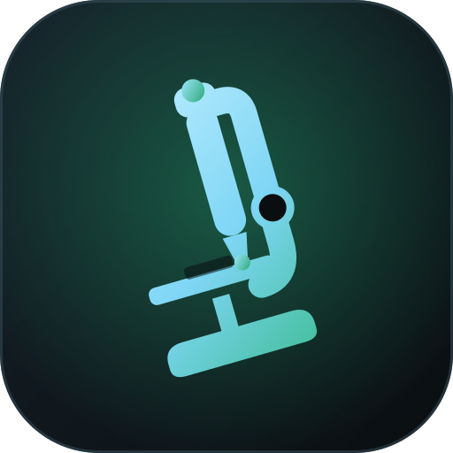

0329:2022
Microscope Viewer
Connect to the Geek Szitman supercamera bridge to view frames from the USB microscope.
Pick a device, then press Start

Connect to the Geek Szitman supercamera bridge to view frames from the USB microscope.